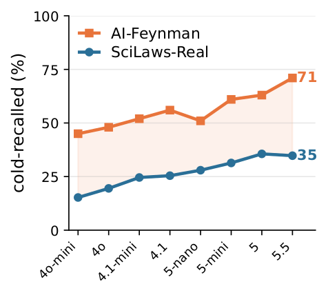

01 / BENCHMARK
Problems a research community is still working on
Not textbook equations. Every problem comes from active, data-driven literature where the published law still leaves room for improvement — and ships with the real dataset it was fitted to.


66 single-group problems use one global law and one parameter set. 52 multi-group problems require a shared functional form that transfers across groups while a few parameters vary — a setting no prior benchmark covers.